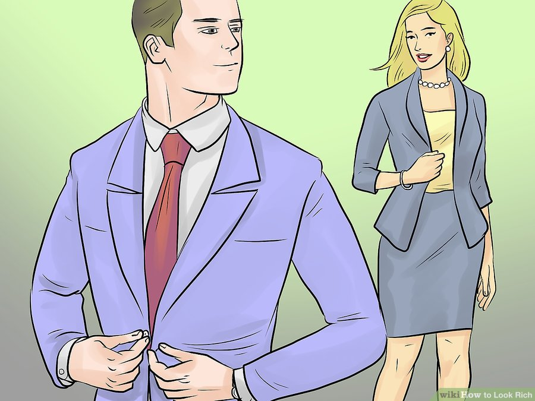
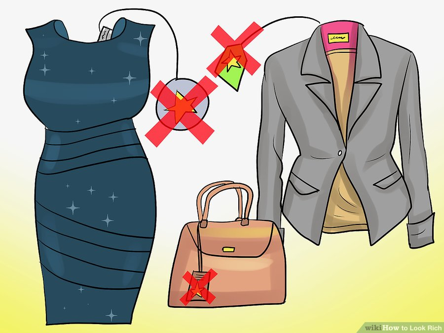
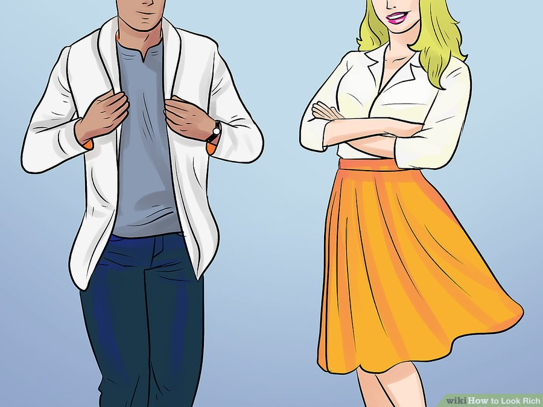
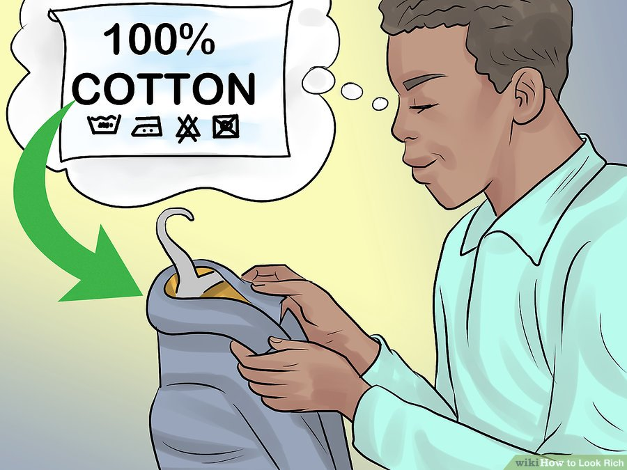
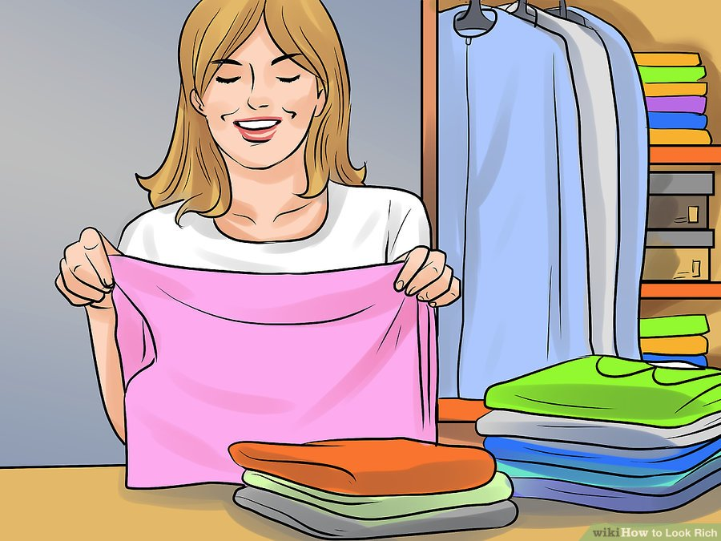
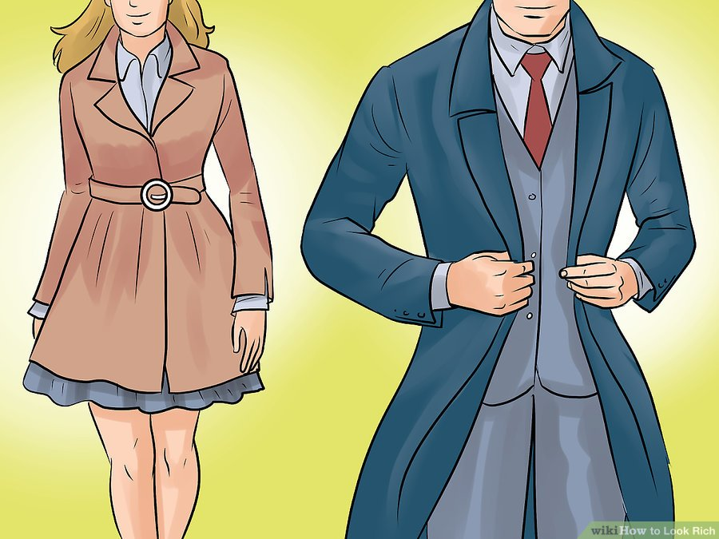
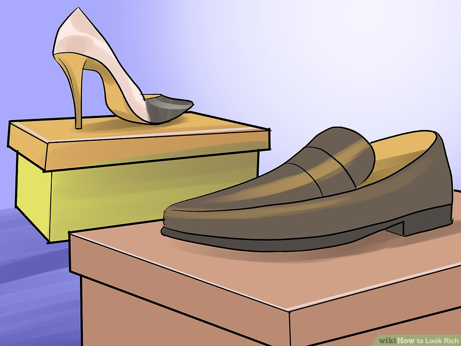
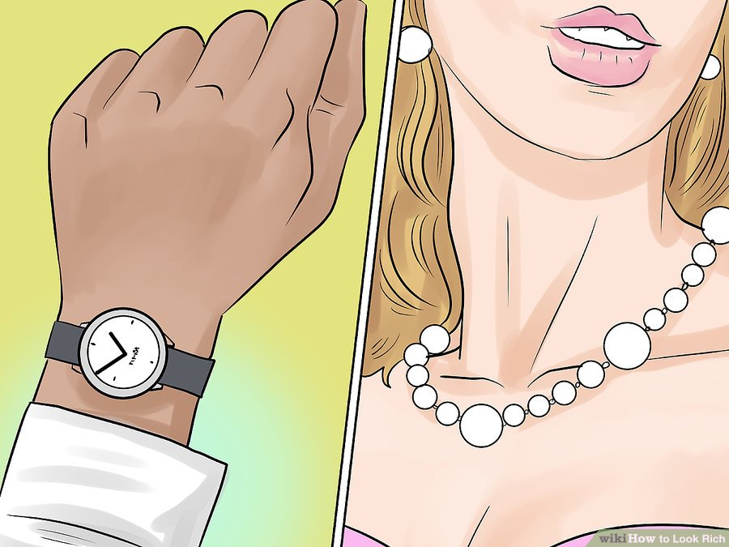
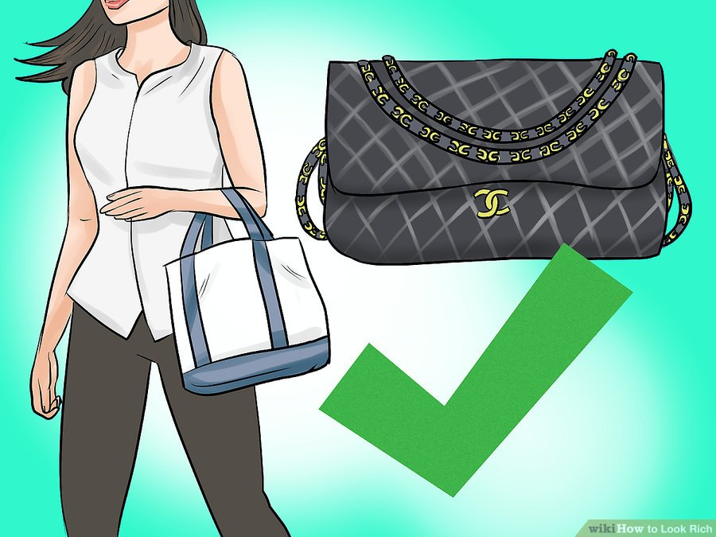

Buy clothes that fit your body well. The most obvious sign of wealth isn't bling, specific brands, fabric, or a particular style – it's tailored clothes. If you want to look rich, you need to make sure your clothes fit like they were made for your body. Clothes need to fit your form and flatter your figure, whether you're talking about casual or formal wear. Department store sizes are widely variable because of the way fabric is machine cut. Two pair of pants that are labeled the same size might actually be fairly different. Try on at least three pairs at your size to find the best fit. Spend extra time shopping to make sure every item fits your body perfectly. Even if you really like a shirt, skirt, or a pair of pants, don't buy it if it doesn't fit your body perfectly.
Remove the tags from your clothes. Expensive designer clothes don't feature brands prominently. If you want to look like you've got a serious bank account, don't make yourself a walking billboard for brand names. Go for clean, sophisticated apparel. Even trendy brands like Coach, Fendi, Dolce & Gabbana, and others may have obviously placed emblems or brands. Even though these might be pricey brands, this isn't a sign of wealth. It's better to have a big wardrobe of beautiful form-fitting items of mysterious origin, than one blingy Coach bag that broke the bank.
Dress up when you can. If you're just playing at looking wealthy, you want to look like you've got somewhere important to be. A board meeting? An exclusive dance club? A yacht club? A red carpet? Every day should be an excuse to dress up and look rich. Things like cardigans in pastel colors, pressed cotton shirts, form-fitting slacks, and slim-fitting jackets should be worn by men whenever possible. No shorts, under any circumstances. It's appropriate for women to wear skirts, dresses, and pumps, whenever possible, if you're going for that "old-money" look, but it's also good to rock a trendy pair of designer jeans, a scarf, and a printed tee in some cases to look movie-star-chic. Just avoid going out in sweatpants.
Buy clothes with natural fabrics. Fabrics should be all-natural, whenever possible. Look at the tags when you buy clothes and pick out cotton, cashmere, silk, linen, and wool over any kind of synthetic blend. If you go with blended fabric, make sure that it's a blend of these natural fibers. Or better yet, buy a combination of expensive fabrics and make your own clothes!
Make sure your clothes are always well-pressed and clean. It's important to have good clothes, but it's even more important to have clothes that look good and are well-kept. Wash your clothes according to the directions included, always, and air-dry them to retain the life of the items. Dry-clean fine fabrics and press your clothes before wearing them. The more you wash certain items, the more they'll age. Press your clothes and fold them neatly between wearings, so you won't need to wash them more frequently. Wool, velvet and silk need to be dry-cleaned. Cotton and cashmere can be washed fine at home.
Be ready for the weather. Not only do you want to make sure that you're dressed smartly, but that you're dressed appropriately for the weather. Don't get caught out in the rain in inappropriate clothes, and always be prepared for abrupt changes in weather, given the season that you're dressing for. Pay attention to fashion magazines to find out about new seasonal fashions and trends as well, so you can be prepared for what's coming up next. The old money crowd loves to layer, so sweaters, overcoats, and similar garb is handy for cooler conditions.
Spend money on shoes. The shoes make the outfit, and you can get a lot of use out of them, so it's one good place to spend a little extra when you're trying to get an outfit together. Acquire at least one pair of really decent well made shoes, and some other value options for heavier use. For men, some very conservative and understated oxfords or loafers are a good idea. Higher-ankle beatle boots can also be stylish and monied-looking. Leather is key. For women, a conservative pump, like the classic Chanel would be a good choice. Keep your shoes very clean at all times. Take them off when you're indoors and polish them regularly to keep them looking out-of-the-box. In fact, keep the box and store them inside it.

Wear some discreet bling. Jewelry can be a trap. A little of it cries out "rich," but too much of it cries out "poseur." Think Jay-Z more so than Trinidad James, and Queen Elizabeth more than Snooki. A few pieces of stylish jewelry can give your look rich elegance.[2] If you can't afford the real thing, keep it classic. In lieu of a genuine Cartier "tank" watch, do what lots of the wealthy do and get the cheapest, simplest Timex with a basic black leather band, small and discreet.[3] Fake pearls are difficult to identify, making them an excellent way to save a little if you can't afford a diamond necklace. 
Find trendy or unusual accessories. An authentic designer bag or wallet is nice, but go for something a bit bland or obsolete. Something that is the "latest fashion" is by definition a trend, which is anathema to the old money crowd. It must be well made and leather even if not designer, go for simple designs. The LL Bean Boat & Tote or a classic black quilted Chanel are good options. Nothing avant-garde garde, and nothing that looks like the Balenciaga Lariat, or the Chloe Paddington. However, if you're impressing the nouveau riche, "trendy" is pretty much mandatory. Rent designer accessories from places like Le Tote, Leading Luxury, or Rent the Runway, to help yourself save some money and appear super-rich.
